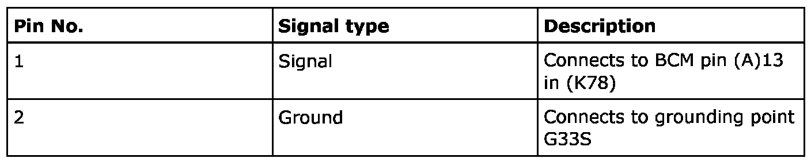
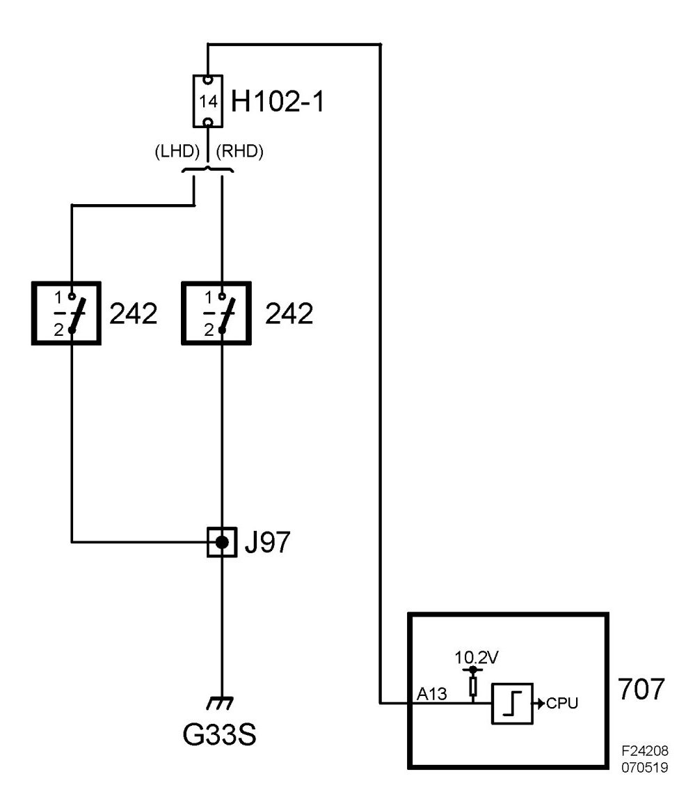

Coolant Level Sensor: Description and Operation
Coolant Level Switch (242)
Location
Coolant level switch (242)
Main task
To warn of low coolant level.
Type
Magnetic reed actuated by a magnet situated in a float.
Connection


Function
The float will drop when the coolant level is low so that the ring magnet acts on the reed and closes the circuit.